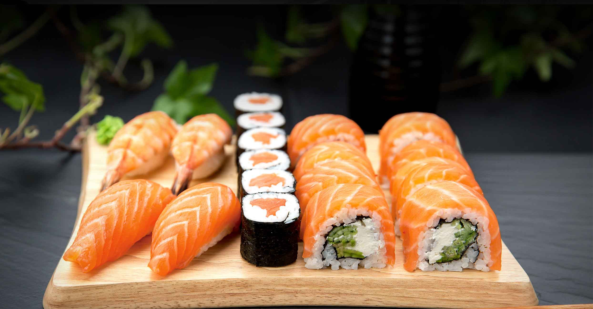

Ce inseamna `Le Ana` ?!
Multi gatesc din necesitate, unii din obligatie, iar putini din placere.
Acest proiect este o parte din mine. Vreau sa demonstrez ca nu este greu sa gatesti si ca mancarea facuta acasa este cea mai gustoasa. Retete usor de preparat si gustoase din bucataria traditionala si internationala. Decoratii in stil modern, vintage si in dependenta de sezon. Vesela o aleg cu atentie sporita, pentru a evidentia culoarea si forma preparatelor culinare. Pagina aceasta nu e adresata bucatarilor profesionisti sau specialistilor in bucatarie, desi sunt bineveniti si ei, ma bucur de fiecare lectie pe care o primesc. Pagina le este destinata celor care cauta o idee pentru masa de azi ori pentru cea de maine.